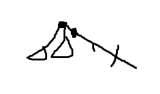

不难发现，当两个起点染出相同的情况时，一定有一些部分染色范围超出了树的边界。
先假设所有的点都是完美点。
现在对于一种染色方案，我们尝试着从若干个中提取出一种方案，使得最小，可以证明最小的一定只有一个。
（或者就是只尝试着从重心那里去统计）
对于每个点只统计以他为中心时最小的那些方案。
根据开始发现的性质，发现对于每个点，有个最大值。
先不考虑全部染完的情况，原因和处理方法后面讲。
考虑一下以某个点为根的情况。

定义表示在树上这个点能够到达的最长的简单路径的长度。
现在，对于这个点的会有一些限制。
根据我们之前的想法，不能出现全部染完的情况。
这样就有
然后什么情况下会有其他点比这个点在相同染色情况时需要的要小呢？
往哪里走可能更小？
假如不走那个最深的子树的话，为了维持最深子树的颜色，必须要增加，而且当访问的子树没有被便利完时，和原来是两种染色情况。
那也就是只能往最深的子树走了。（在图中表示走到）
为了保证最深子树的染色情况，点的必须减去从根走过来的那一节（-1）。
（这里就是不考虑全部染完的用途。如果考虑全部染完，会有情况使得往最深子树走时可以直接卡出树的边界而不用减少。）
然后往根的其它子树走的时候还要加上那一段，所以没网最深子树走一格，其它子树的染色深度都要-2。
只有当根节点的比非最深子树的深度大2或以上时，最深子树的节点才有代替根节点成为相同方案时 更小的选择。
对于每一个点都当树根这样搞起来。
因为每个方案都对应了一个重心，所以只要把每个点的限制加起来就是答案了。
然而现在的树并不完美。
怎么替代？
对于不完美的点，我们可以尝试着用另外一个完美的点去代替他。
两个点的染色方案相同，那说明一个点到底了。
想让染色方案相同部分尽可能的多，那就要让一个点尽快到底。
但现在一个点被当做树根，那就可以转化成到一个子树被填满。
这样以这个点为根，就直接找一个深度最浅并且包含完美点的字树就行了，替代的最小要求就是该子树的深度(不染完子树那两个点的染色情况怎么可能一样呢)
其实就是把换到了染色块的重心去统计答案。。

那如果不被喜欢会不会有不同呢？
不喜欢的点同样是可以排挤树根的，无论他的在不在范围内。
现在假设为树根，然后对于一种的情况，发现如果是完美点的话可以用的长度来解决。（显然深度不是最深的子树都必须被染完）
但如果不是完美点，而且的大于（也就是也不会去尝试统计这种情况）那是不是应该统计上这种情况呢？
但是想一想这个染色情况，无论是，其实都是同一种染色块。
如果的比要大的话，说明这个染色块里面，并不存在一个完美点，使得从这个点出发能恰好染出这种染色方案。
假如是完美点，那对于,的长度也一定是合法的（不就是吗），与的条件不符。
也就是说根本染不出这种情况，任意一个点都不能。
所以这次直接统计每个点的还是答案。
code:
#include<iostream>
#include<cstdio>
#include<cstring>
typedef long long lint;
const int N=2e5+2;
int n,m,fa[N],cntok[N],fir[N],fr1[N],fr2[N],dep1[N],dep2[N];
lint ans;
char quanlike[N];
struct edge{
int to,nx;
}eg[N<<1];
inline void apn(int &x,const int y){
if(x>y) x=y;
}
inline void add(const int a,const int b){
static int cnt=0;
eg[++cnt]=(edge){b,fir[a]};
fir[a]=cnt;
}
inline int nxi(){
int x=0;
char c;
while((c=getchar())>'9'||c<'0');
while(x=x*10-48+c,(c=getchar())>='0'&&c<='9');
return x;
}
inline void updep(const int x,const int y,int caly[]){
if(dep1[x]<caly[y]+1){
dep2[x]=dep1[x];
fr2[x]=fr1[x];
dep1[x]=caly[y]+1;
fr1[x]=y;
}
else if(dep2[x]<caly[y]+1){
dep2[x]=caly[y]+1;
fr2[x]=y;
}
}
inline int upcnt(const int x,const int y){
return fr1[y]==x?dep2[y]:dep1[y];
}
void init(int x){
for(int i=fir[x];i;i=eg[i].nx){
int y=eg[i].to;
if(y!=fa[x]){
fa[y]=x;
init(y);
cntok[x]+=cntok[y];
updep(x,y,dep1);
}
}
}
void dfs(int x){
int min_sdep=quanlike[x]=='1'?0:1e9;
if(fa[x]){
if(m-cntok[x]) apn(min_sdep,upcnt(x,fa[x])+1);
if(fr1[fa[x]]!=x) updep(x,fa[x],dep1);
else updep(x,fa[x],dep2);
}
for(int i=fir[x];i;i=eg[i].nx){
int y=eg[i].to;
if(y!=fa[x]){
if(cntok[y]) apn(min_sdep,upcnt(x,y)+1);
dfs(y);
}
}
ans+=std::max(0,std::min(dep1[x]-1,dep2[x]+1)-min_sdep+1);
}
int main(){
#ifndef ONLINE_JUDGE
freopen("c.in","r",stdin);
#endif
n=nxi();
for(int i=1;i<n;++i){
const int a=nxi(),b=nxi();
add(a,b);
add(b,a);
}
scanf("%s",quanlike+1);
for(int i=1;i<=n;++i){
m+=cntok[i]=quanlike[i]=='1';
}
init(1);
dfs(1);
printf("%lld\n",ans+1);
return 0;
}